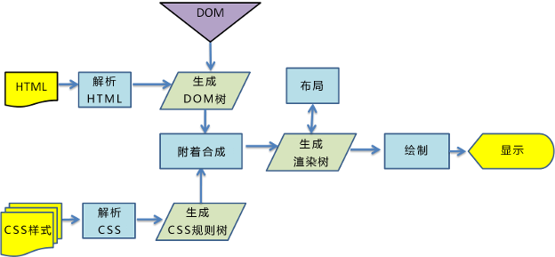
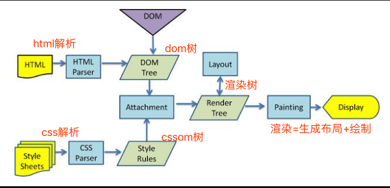
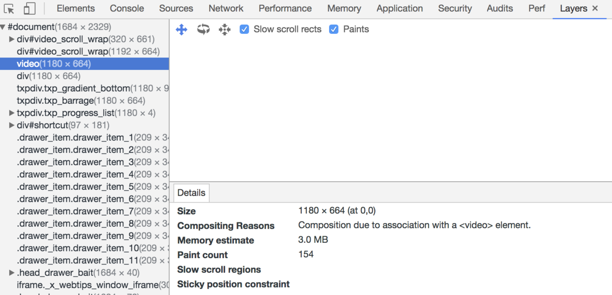

# 一、浏览器如何渲染网页
概述：浏览器渲染一共有五步
- 处理
HTML并构建DOM树。 - 处理
CSS构建CSSOM树。 - 将
DOM与CSSOM合并成一个渲染树。 - 根据渲染树来布局，计算每个节点的位置。
- 调用
GPU绘制，合成图层，显示在屏幕上
第四步和第五步是最耗时的部分，这两步合起来，就是我们通常所说的渲染
具体如下图过程如下图所示


渲染
- 网页生成的时候，至少会渲染一次
- 在用户访问的过程中，还会不断重新渲染
重新渲染需要重复之前的第四步(重新生成布局)+第五步(重新绘制)或者只有第五个步(重新绘制)
- 在构建
CSSOM树时，会阻塞渲染，直至CSSOM树构建完成。并且构建CSSOM树是一个十分消耗性能的过程，所以应该尽量保证层级扁平，减少过度层叠，越是具体的CSS选择器，执行速度越慢 - 当
HTML解析到script标签时，会暂停构建DOM，完成后才会从暂停的地方重新开始。也就是说，如果你想首屏渲染的越快，就越不应该在首屏就加载JS文件。并且CSS也会影响JS的执行，只有当解析完样式表才会执行JS，所以也可以认为这种情况下，CSS也会暂停构建DOM
# 二、浏览器渲染五个阶段
# 2.1 第一步：解析HTML标签，构建DOM树
在这个阶段，引擎开始解析
html，解析出来的结果会成为一棵dom树dom的目的至少有2个
- 作为下个阶段渲染树状图的输入
- 成为网页和脚本的交互界面。(最常用的就是
getElementById等等)
当解析器到达script标签的时候，发生下面四件事情
html解析器停止解析,- 如果是外部脚本，就从外部网络获取脚本代码
- 将控制权交给
js引擎，执行js代码 - 恢复
html解析器的控制权
由此可以得到第一个结论1
- 由于
<script>标签是阻塞解析的，将脚本放在网页尾部会加速代码渲染。 defer和async属性也能有助于加载外部脚本。defer使得脚本会在dom完整构建之后执行；async标签使得脚本只有在完全available才执行，并且是以非阻塞的方式进行的
# 2.2 第二步：解析CSS标签，构建CSSOM树
- 我们已经看到
html解析器碰到脚本后会做的事情，接下来我们看下html解析器碰到样式表会发生的情况 js会阻塞解析，因为它会修改文档(document)。css不会修改文档的结构，如果这样的话，似乎看起来css样式不会阻塞浏览器html解析。但是事实上css样式表是阻塞的。阻塞是指当cssom树建立好之后才会进行下一步的解析渲染
通过以下手段可以减轻cssom带来的影响
- 将
script脚本放在页面底部 - 尽可能快的加载
css样式表 - 将样式表按照
media type和media query区分，这样有助于我们将css资源标记成非阻塞渲染的资源。 - 非阻塞的资源还是会被浏览器下载，只是优先级较低
# 2.3 第三步：把DOM和CSSOM组合成渲染树（render tree）

# 2.4 第四步：在渲染树的基础上进行布局，计算每个节点的几何结构
布局(
layout)：定位坐标和大小，是否换行，各种position,overflow,z-index属性
# 2.5 调用 GPU 绘制，合成图层，显示在屏幕上
将渲染树的各个节点绘制到屏幕上，这一步被称为绘制
painting
# 三、渲染优化相关
# 3.1 Load 和 DOMContentLoaded 区别
Load事件触发代表页面中的DOM，CSS，JS，图片已经全部加载完毕。DOMContentLoaded事件触发代表初始的HTML被完全加载和解析，不需要等待CSS，JS，图片加载
# 3.2 图层
一般来说，可以把普通文档流看成一个图层。特定的属性可以生成一个新的图层。不同的图层渲染互不影响，所以对于某些频繁需要渲染的建议单独生成一个新图层，提高性能。但也不能生成过多的图层，会引起反作用。
通过以下几个常用属性可以生成新图层
3D变换：translate3d、translateZwill-changevideo、iframe标签- 通过动画实现的
opacity动画转换 position: fixed
# 3.3 重绘（Repaint）和回流（Reflow）
重绘和回流是渲染步骤中的一小节，但是这两个步骤对于性能影响很大
- 重绘是当节点需要更改外观而不会影响布局的，比如改变
color就叫称为重绘 - 回流是布局或者几何属性需要改变就称为回流。
回流必定会发生重绘，重绘不一定会引发回流。回流所需的成本比重绘高的多，改变深层次的节点很可能导致父节点的一系列回流
以下几个动作可能会导致性能问题
- 改变
window大小 - 改变字体
- 添加或删除样式
- 文字改变
- 定位或者浮动
- 盒模型
很多人不知道的是，重绘和回流其实和 Event loop 有关
- 当
Event loop执行完Microtasks后，会判断document是否需要更新。因为浏览器是60Hz的刷新率，每16ms才会更新一次。 - 然后判断是否有
resize或者scroll，有的话会去触发事件，所以resize和scroll事件也是至少16ms才会触发一次，并且自带节流功能。 - 判断是否触发了
media query - 更新动画并且发送事件
- 判断是否有全屏操作事件
- 执行
requestAnimationFrame回调 - 执行
IntersectionObserver回调，该方法用于判断元素是否可见，可以用于懒加载上，但是兼容性不好 - 更新界面
- 以上就是一帧中可能会做的事情。如果在一帧中有空闲时间，就会去执行
requestIdleCallback回调
常见的引起重绘的属性
colorborder-stylevisibilitybackgroundtext-decorationbackground-imagebackground-positionbackground-repeatoutline-coloroutlineoutline-styleborder-radiusoutline-widthbox-shadowbackground-size
# 3.4 常见引起回流属性和方法
任何会改变元素几何信息(元素的位置和尺寸大小)的操作，都会触发重排，下面列一些栗子
- 添加或者删除可见的
DOM元素； - 元素尺寸改变——边距、填充、边框、宽度和高度
- 内容变化，比如用户在
input框中输入文字 - 浏览器窗口尺寸改变——
resize事件发生时 - 计算
offsetWidth和offsetHeight属性 - 设置
style属性的值
回流影响的范围
由于浏览器渲染界面是基于流失布局模型的，所以触发重排时会对周围DOM重新排列，影响的范围有两种
- 全局范围：从根节点
html开始对整个渲染树进行重新布局。 - 局部范围：对渲染树的某部分或某一个渲染对象进行重新布局
全局范围回流
<body>
<div class="hello">
<h4>hello</h4>
<p><strong>Name:</strong>BDing</p>
<h5>male</h5>
<ol>
<li>coding</li>
<li>loving</li>
</ol>
</div>
</body>
当
p节点上发生reflow时，hello和body也会重新渲染，甚至h5和ol都会收到影响
局部范围回流
用局部布局来解释这种现象：把一个
dom的宽高之类的几何信息定死，然后在dom内部触发重排，就只会重新渲染该dom内部的元素，而不会影响到外界
# 3.5 减少重绘和回流
使用
translate替代top
<div class="test"></div>
<style>
.test {
position: absolute;
top: 10px;
width: 100px;
height: 100px;
background: red;
}
</style>
<script>
setTimeout(() => {
// 引起回流
document.querySelector('.test').style.top = '100px'
}, 1000)
</script>
- 使用
visibility替换display: none，因为前者只会引起重绘，后者会引发回流（改变了布局） - 把
DOM离线后修改，比如：先把DOM给display:none(有一次Reflow)，然后你修改100次，然后再把它显示出来 - 不要把
DOM结点的属性值放在一个循环里当成循环里的变量
for(let i = 0; i < 1000; i++) {
// 获取 offsetTop 会导致回流，因为需要去获取正确的值
console.log(document.querySelector('.test').style.offsetTop)
}
- 不要使用
table布局，可能很小的一个小改动会造成整个table的重新布局 - 动画实现的速度的选择，动画速度越快，回流次数越多，也可以选择使用
requestAnimationFrame CSS选择符从右往左匹配查找，避免DOM深度过深- 将频繁运行的动画变为图层，图层能够阻止该节点回流影响别的元素。比如对于
video标签，浏览器会自动将该节点变为图层。

